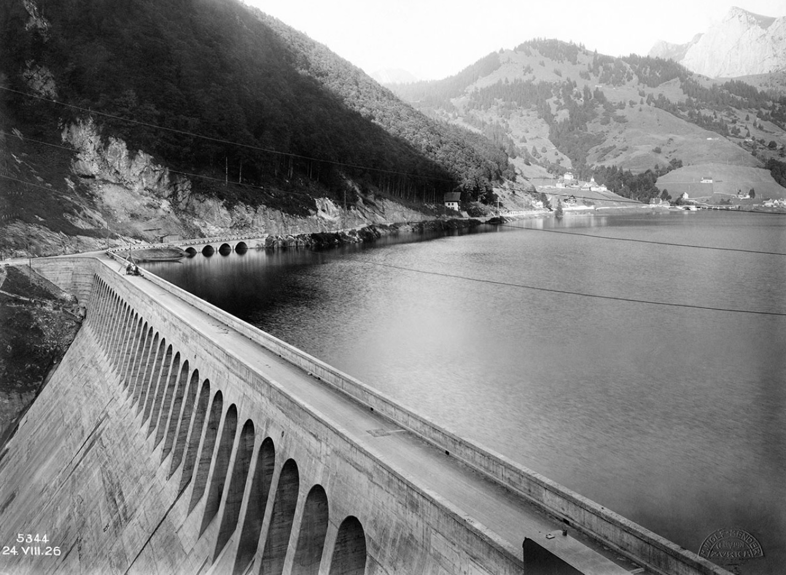

Gemeinschaft wird als tragend, aber fordernd erlebt.
Synonyme: Gemeinschaft / Zusammenhalt; Forderung / Belastung
Unterschiedliche Erfahrungen führen zu Konflikten.
Synonyme: Spannung / Konflikt; Unterschied / Divergenz